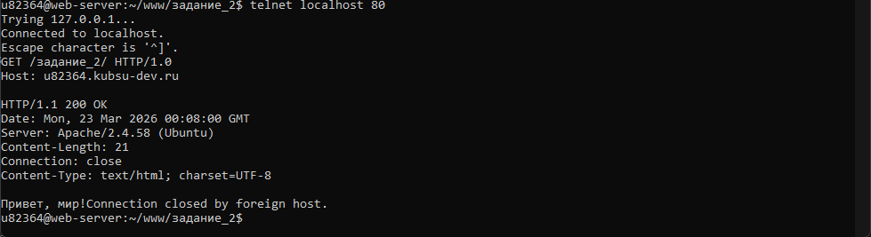
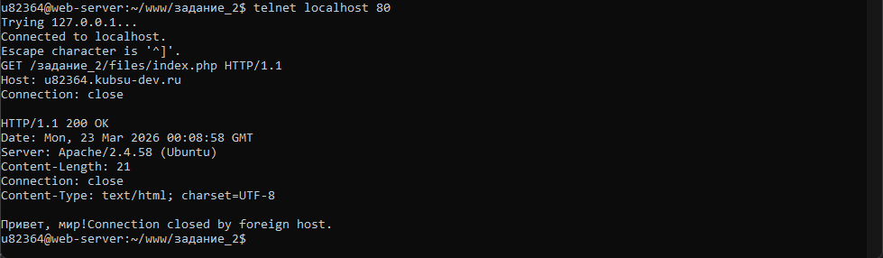
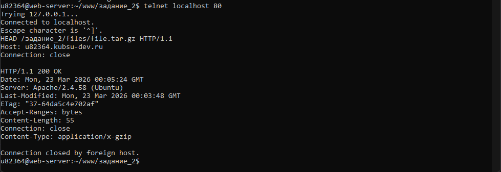
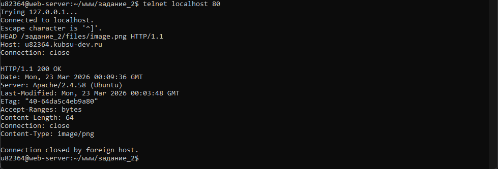
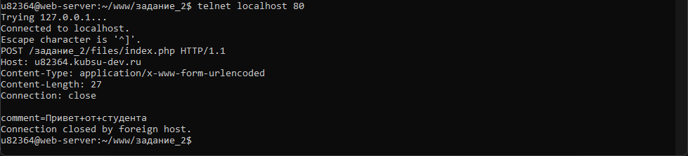
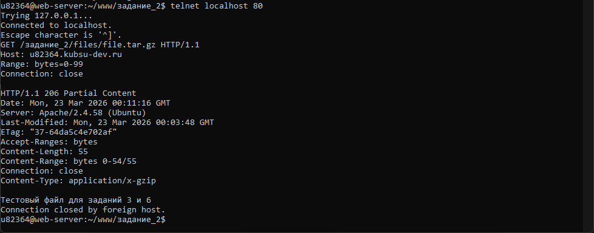
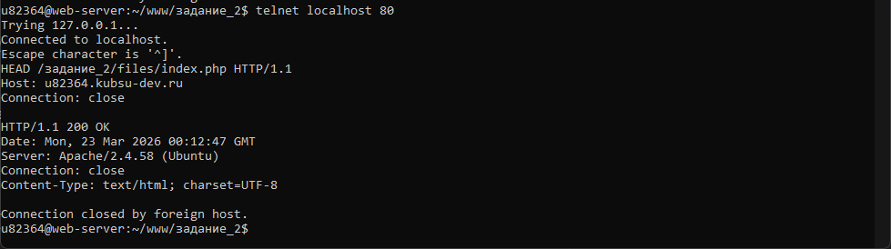

GET /задание_2/ HTTP/1.0 Host: u82364.kubsu-dev.ru

GET /задание_2/files/index.php HTTP/1.1 Host: u82364.kubsu-dev.ru Connection: close

HEAD /задание_2/files/file.tar.gz HTTP/1.1 Host: u82364.kubsu-dev.ru Connection: close

HEAD /задание_2/files/image.png HTTP/1.1 Host: u82364.kubsu-dev.ru Connection: close

POST /задание_2/files/index.php HTTP/1.1 Host: u82364.kubsu-dev.ru Content-Type: application/x-www-form-urlencoded Content-Length: 27 Connection: close comment=Привет+от+студента

GET /задание_2/files/file.tar.gz HTTP/1.1 Host: u82364.kubsu-dev.ru Range: bytes=0-99 Connection: close

HEAD /задание_2/files/index.php HTTP/1.1 Host: u82364.kubsu-dev.ru Connection: close

В ходе выполнения задания использовалась система контроля версий Git для управления файлами и синхронизации с сервером. Основные команды:
Для первоначального клонирования репозитория с сервера на локальный компьютер использовалась команда:
git clone u82364@kubsu-dev.ru:~/www/задание_2
Это позволило создать локальную копию проекта для работы.
Для обновления локальной копии репозитория с сервера использовалась команда:
git pull origin master
Это обеспечивало синхронизацию с последними изменениями, внесенными в репозиторий.
Для отправки изменений с локального компьютера на сервер использовалась команда:
git push origin master
Это позволило сохранить результаты работы на сервере и сделать их доступными через веб-интерфейс.
Использование Git обеспечило надежное управление версиями файлов и упростило процесс разработки и тестирования. Система контроля версий позволила отслеживать все изменения, вносить исправления и возвращаться к предыдущим версиям при необходимости.